朝九時に開けます。
揃うのは、だいたい十時前。
なくなったら、その日は終いです。
古河市雷電町の、青いひさしのパン屋です。
惣菜パンを中心に、その日のパンを焼けた順から棚へ並べてまいります。
土曜と月曜は、お休みをいただいております。
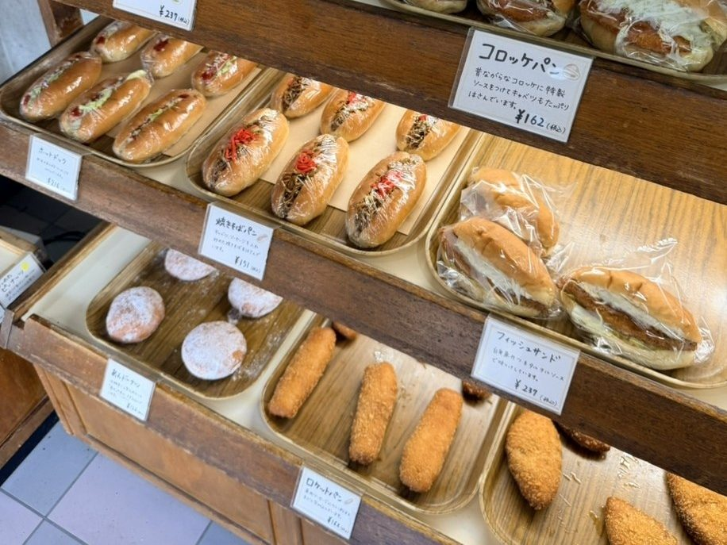
開けてすぐは、まだ並びはじめです。十時ごろにはひととおり揃い、お昼を過ぎると、棚は少しずつ軽くなってまいります。ぜんぶの顔ぶれからお選びいただくなら、十時からお昼までにおいでください。
なくなり次第、終いにしております。
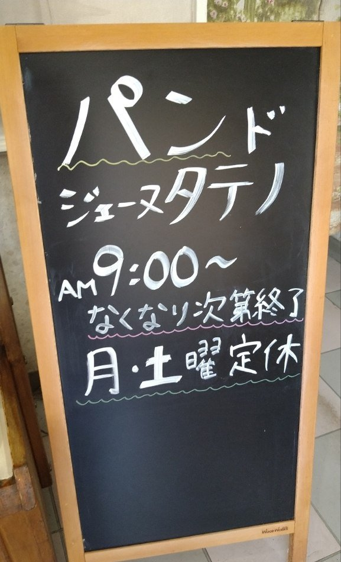
棚のまんなかは、惣菜パンです。コロッケパン、ツナ＆ポテサラ、フィッシュサンド——そのまま召し上がれるものを、毎朝焼いております。
お昼のひとつに、おやつのひとつに。ふだんの日に気兼ねなく手が伸びるように焼いております。あんぱん、クリームパンなどの菓子パンも、同じ棚に並べてお迎えします。
食パンとクロワッサンは、古くからお出ししてまいりました。長くご贔屓くださる方の多い品です。あわせてどうぞ。
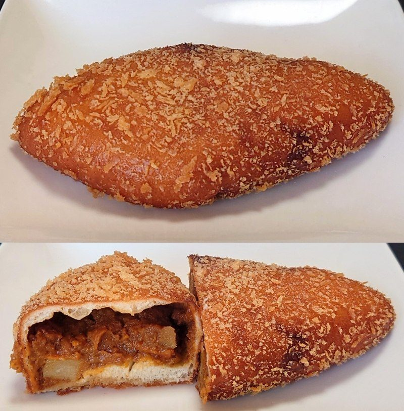
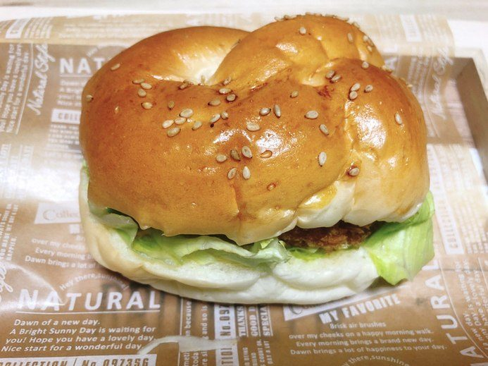
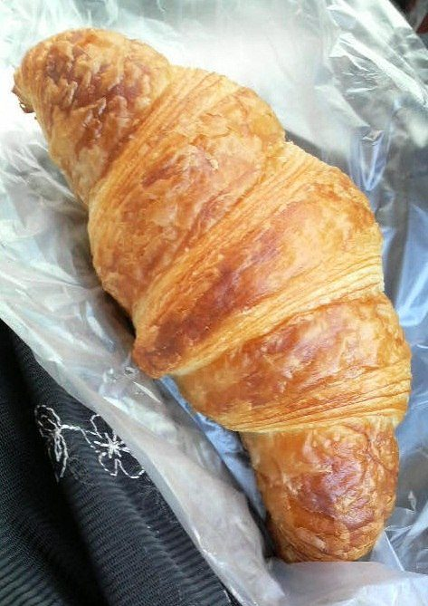
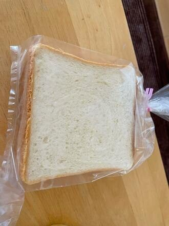
その雰囲気、優しい接客、めちゃくちゃ応援したくなる古き良きパン屋さんでありまする。 … 大好物の惣菜パンが多数
お客様の声より
品揃えは素朴な惣菜系が中心になっています。価格もかなり低く抑えた設定になっています。
お客様の声より
個人経営の老舗パン屋さん。パンの種類が多く、食パン・あんパン・クリームパン等の定番から、惣菜パン/菓子パン等、ジャンルが豊富。派手さは無く素朴な見た目のパンだが、どれも生地・中身も美味しい職人の味。価格も手頃なので買いすぎてしまう。
お客様の声より
特にクロワッサンはその塩味がきいてておいしい！でも一番リピートしてるのは安定の食パン。とてもしっとりしてて、トーストするとさくさくになって、何も付けなくても味がしっかりあっておいしい！！
お客様の声より
耳まで美味しい食パンに、こどもたちもいつもは食べない耳までたいらげます。私もここの耳はだいすきです。
お客様の声より
お好きなものを、お好きなだけ。パンの顔を見て、今日のひとつをゆっくりお選びください。
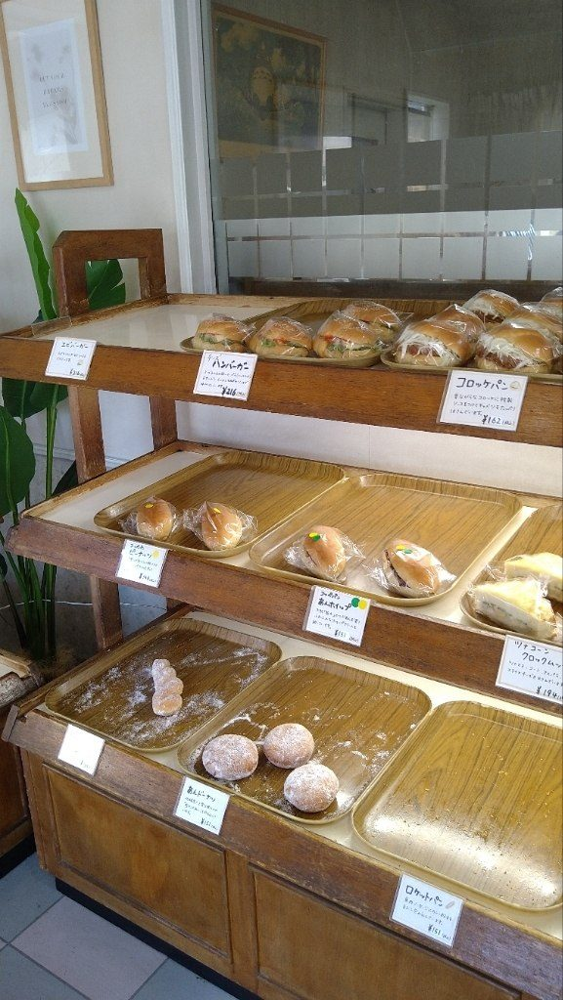
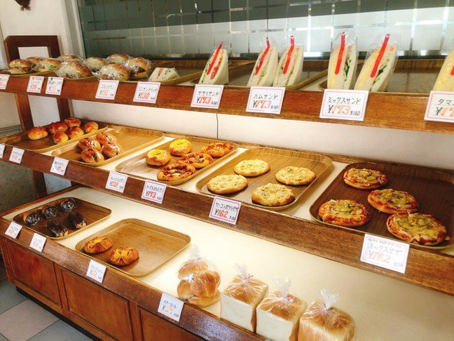
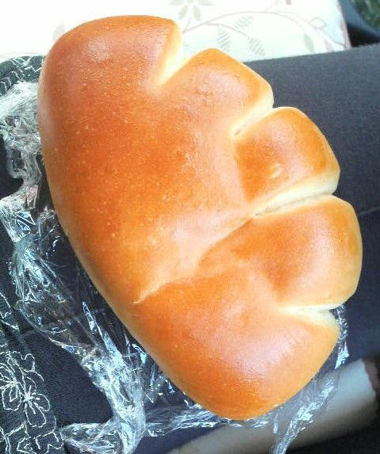
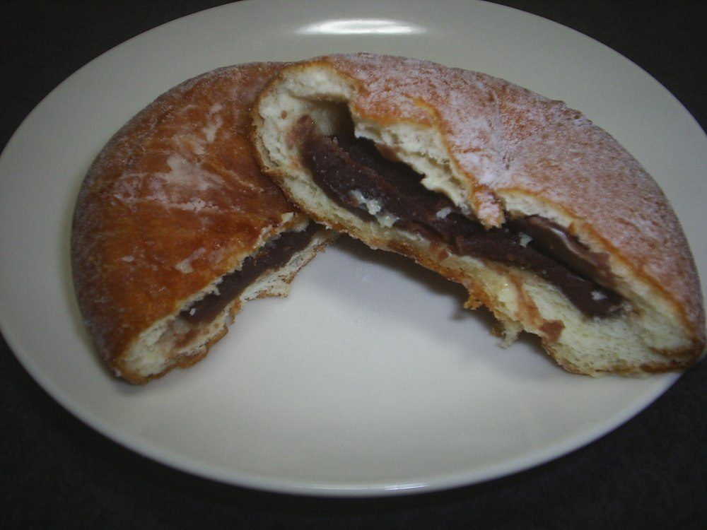
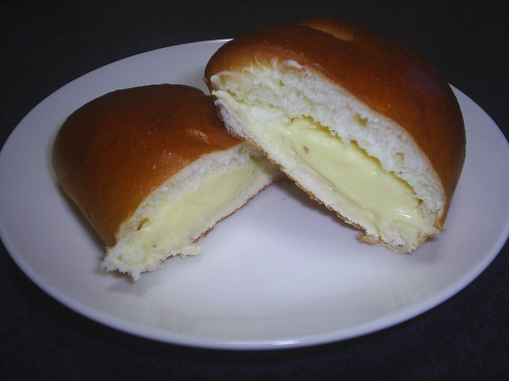
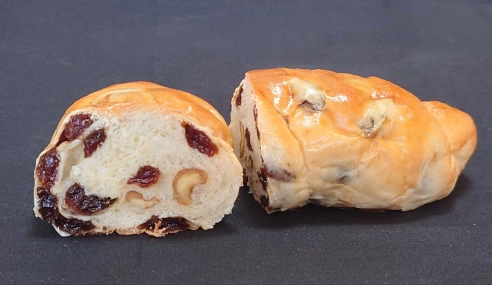
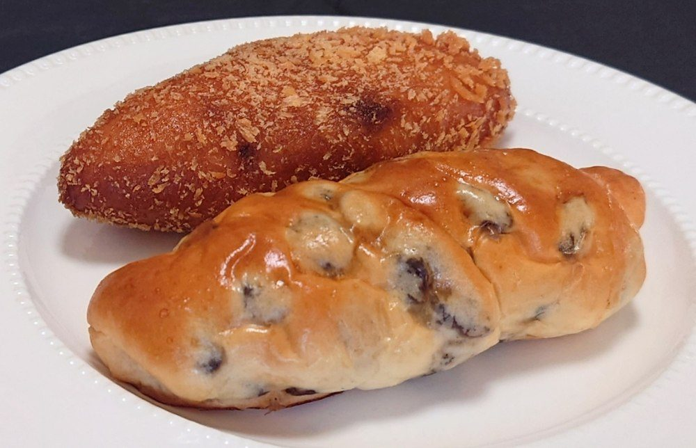
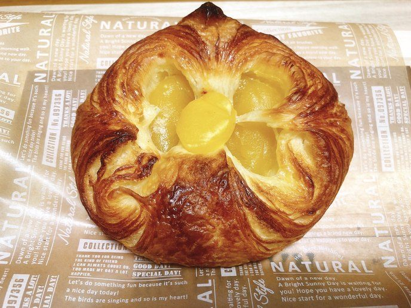
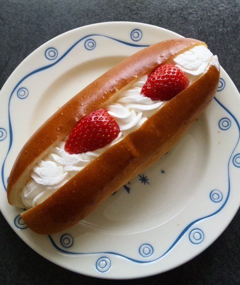
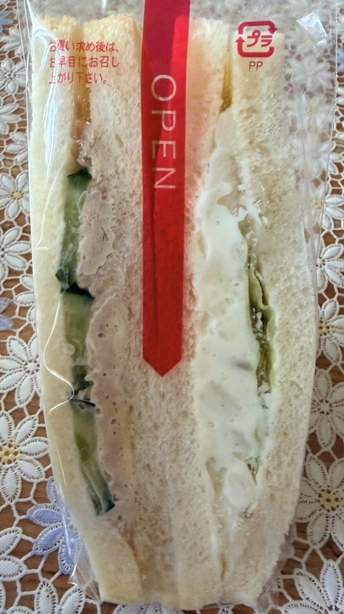
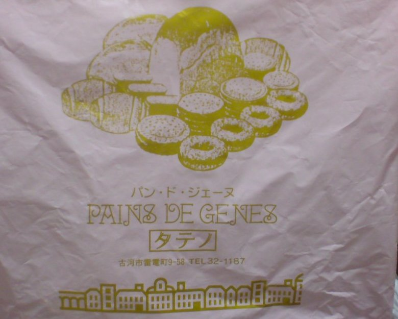
イオンの近く、県道沿いにございます。青い大きなひさしが目印です。駐車場がございます。
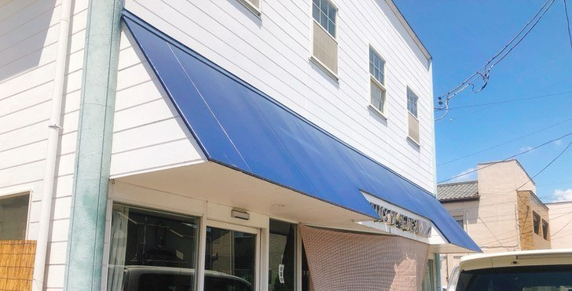
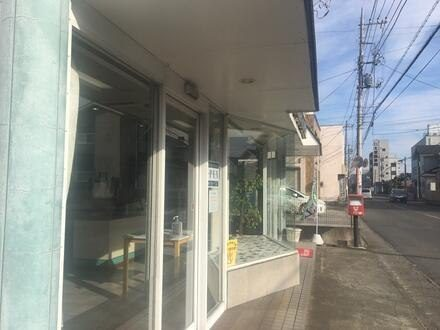
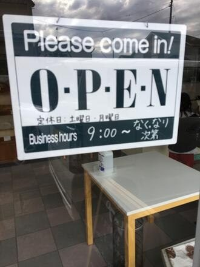
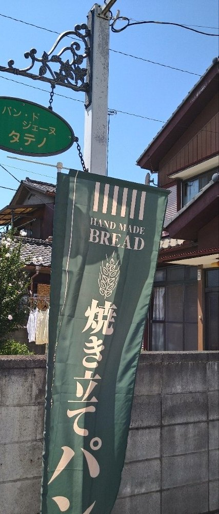
| 住所 | 〒306-0004 茨城県古河市雷電町9-58 |
|---|---|
| 電話 | 0280-32-1187 |
| 営業時間 | 9:00〜16:00（揃うのは10時前が目安・なくなり次第終い） |
| 定休日 | 月曜日・土曜日 |
| 駐車場 | 有 |
焼きたての揃う午前のうちに、どうぞお立ち寄りください。